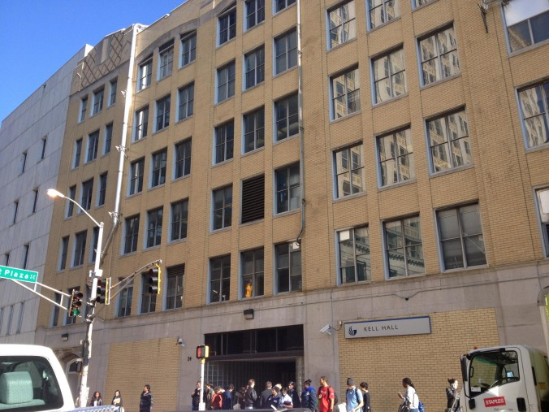

33 Gilmer St SE
Atlanta, GA 30303
(404) 413-2000
Atlanta, GA 30303
(404) 413-2000
In 1964, it was renamed Kell Hall to honor Wayne S. Kell, the original director of the school.ell became Georgia's third certified public accountant and Tech's first commerce class graduated in 1916. Originally built in 1925 as one of the first parking garages in the city, the Ivy Street Garage was renovated and opened to students in 1946. Since then, the building has served as a centerpiece in the downtown campus
